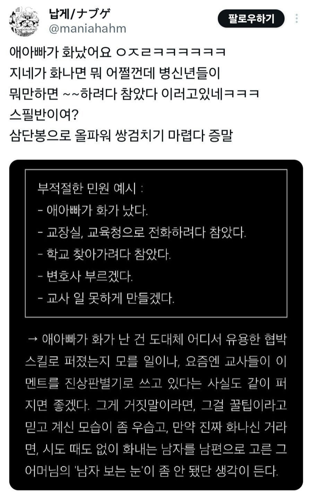

제 똘똘이가 많이 화났어요 ㅡㅡ
에게
에게게게겍♡♡♡

어랏? 어젯밤엔 괜찮던데요??
아! 그게 화난 거예요?
헛소리 말고 뒤돌아 자기야
그래요? 왜 안보이지...
예.. 잘 달래주세용..
제 쥬지가 화가 많이 났어요
그이의 그곳이.... 많이 화났어요
지가 썅년되기싫으니까 남편팔아먹는 화법 ㅋㅋㅋㅋㅋㅋㅋㅋㅋㅋ
레알 여자 특유의 음습 그 자체 어법 ㅋㅋㅋㅋㅋ
남자가 진짜 빡치면 저렇게 좋겐 안끝나지
줌마들마냥 좆도 아닌걸로 빡치진 않으니깐
ㄹㅇㅋㅋㅋ 애엄마들은 화나봐야 정신적 타격인데
애아빠들 진짜 개빡치면 정신적이 아니라 물리적타격 들어와서 더무서움...
얼마나 유명하면 드라마에 나왔겠어.. ㅋㅋㅋ
여자들이 문제되는 일을 남자한테 떠넘기고 싶어하는 심리에서 나온 워딩이긴 한데, 진짜로 그렇게 많이 쓰는 건가
애아빠가 화났으면 교무실 달려오지
푸시마냥 아내통해서 전달하지않음
스필반이면 30대 후반쯤 되려나
나 교사할때 저거 당해본 적 있음.
애 두명이 싸워서 방과후에 나랑 개별 상담하고 서로 상대방 입장에서 글 써보기 시킴.
집에 가서 얘기를 했는지 먼저 때린 애 엄마가 나한테 전화해서 지 남편이 화가났다 어쩌고 하더니 20분뒤에 애 아빠가 전화를 하더라.
근데 등떠밀려 전화한건지 무슨일 있는지도 제대로 모르고 왜 방과후에 마음대로 애를 남기냐마냐 함.
그래서 자초지종 설명하니까 애아빠가 죄송합니다 두번 말하고 끊더라. ㅋ
ㅋㅋㅋ올파워 쌍검치기
애아빠가 진짜 화나면 애아빠가 직접 찾아가지. 3학년 담임 개독 또라이년이 매주 자기 교회 안 나오는 애들 앞으로 불러내서 쪽줬는데, 아버지가 그거 알고 개빡치셔서 휴가 내고 찾아가서 항의하셨음. 아버지가 나 학교 다니는 중에 유일하게 관여하신 일. 그리고 그 개독년은 그 지랄을 멈춘 게 아니라 나만 빼고 계속하더라.
남편 간판 내세워서 본능적으로 책임떠미는거아님? 자기는 대리자고 ㅋㅋㅋ
개붕신같은 화법이지
남편이 화나면 뭐 어쩌라는건지
남편은 일하느라 바빠서 아무것도 모르는데
방패막이 혹은 위협으로 써먹고 남편한테 말해야 할땐 유리한것들만 알려주고 통화시켰다가
선생이 이거 저거 이러해서 중립입장에서 말하면
그제서야 무슨일인지 알고 남편이 아니라 와이프랑 싸움
비슷한걸로 '나는 괜찮은데 다른사람들이 불편해한다'가 있음 ㅋㅋㅋㅋ
왜 지가 불편한걸 남들 끌고와서 고나리질인지
스필반이 뭔가했는데 와 이거 ....
저것도 해줘! 화법같다
?? : 우리남편 으르렁했어! 깨갱 해줘
우리 남편이 화났어요 <- 이새끼 웃긴 점 ㅋㅋㅋㅋㅋ 심지어 학교뿐 아니라 오만 데서 다 쓰는 기술임 ㅋㅋㅋㅋㅋㅋ
우리 남편이 화가 많이 났어요 하이닉스 280층이거든요....
나도 들어봤는데 보통은 부창부수더라
ㄹㅇ푸쉬 화법이긴함 ㅋㅋㅋ
진짜 개빡쳤으면 연차 내고 본인이 왔겠지 ㅋㅋ